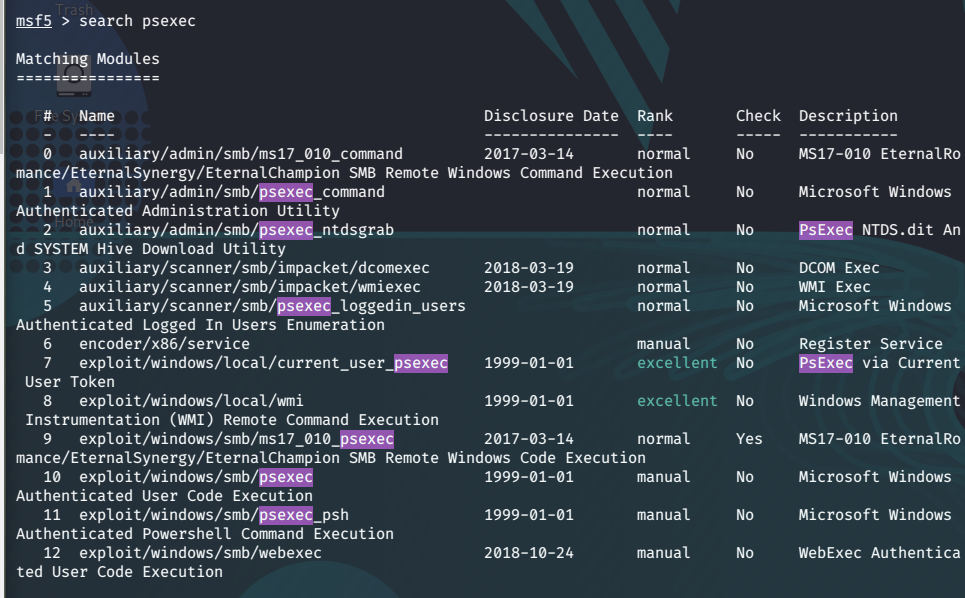

so far all we have is a credential. So we need to think that what we can do with that credential so firsly let's boot up metasploit.
What is PsExec?
first definition:As you probably know, PsExec is a tool included in the Sysinternals Suite created by Mark Russinovich. Originally, it was intended as a convenience tool for system administrators so they could perform maintenance tasks by running commands on remote hosts.
Definiton From Windows: . PsExec is a light-weight telnet-replacement that lets you execute processes on other systems, complete with full interactivity for console applications, without having to manually install client software. PsExec's most powerful uses include launching interactive command-prompts on remote systems and remote-enabling tools like IpConfig that otherwise do not have the ability to show information about remote systems.
---------------------------------------------------------------------------------------------------
this will be a quick repeat of passed lessons



let's run this and see what happens this might not work on the first go.

okey this doesn't work maybe we can change the target


we've got virus detected somewhat windows defender turned on but that's ok this is a good learning lesson.
So psexec is getting block let's try something different
let's try psexec.py without metasploit.

so meterpreter got picked up psexec.py did not
Pro Tip:
actually psexec is one of the more noisy when it comes to antivirus we should avoid starting psexec before that we should try with smbexec and wmiexec, if you can they're only like half shells is what they're considered they're not fully interactive but they're good enough to navigate around the C drive and you can issue commands as you navigate. You can figure out that what antivirus is running and maybe try to find disable it so then you can run something more robust like windows meterpreter.
MOST IMPORTANT TAKEAWAY IS THAT
DON'T JUST GIVE UP AT THE FIRST ONE. KNOW THAT THERE ARE MULTIPLE OPTIONS.